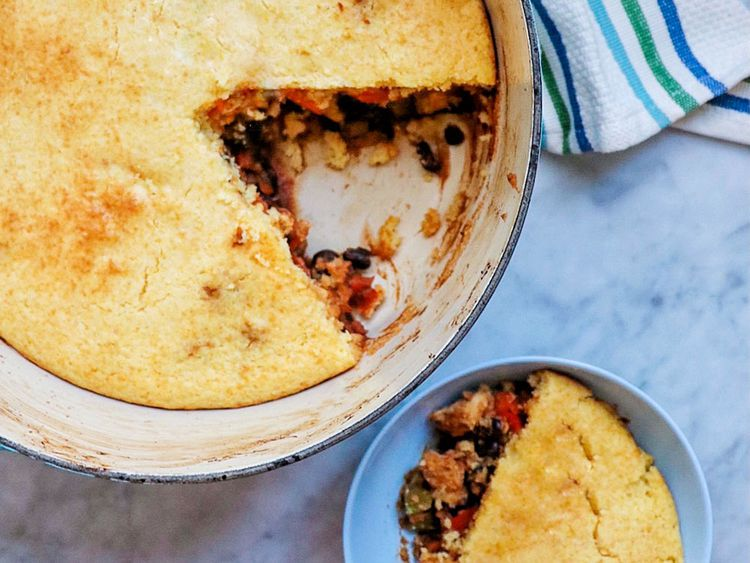

Southwestern Pot Pie

Description:
So this is a delicious pot pie that will leave you eating till you physically cannot fit any more food down your gullet!
Ingredients:
- 1 tbsp olive oil
- 1 pound skinless, boneless chicken breast, diced
- 2 medium carrots, diced
- 2 stalks celery, diced
- 1 red bell pepper, diced
- 1 bunch scallions diced
- 1 can diced tomatoes with green chillies, undrained
- 2 cans of black beans
- 1 tbsp ground cumin
- 4 tbsp chilli powder
- 2 tablespoon granulated garlic
- 2 tablespoon onion powder
- 1/4 teaspoon hot smoked paprika
- salt and ground black pepper, to taste
- 1 package dry corn muffin mix
- 1/3 cup milk
- 1 egg
yup, wish I had someone to make my lonely ass this dish.
Steps:
- Preheat the oven to 400 degrees F (200 degrees C).
- Heat oil in a Dutch oven over medium heat. Add chicken. Cook, stirring occasionally, until no longer pink inside, 5 to 7 minutes. Add carrots, celery, bell pepper, and scallions and cook until tender, about 5 minutes. Add tomatoes, black beans, chili powder, cumin, garlic, onion powder, paprika, salt, and black pepper. Stir to combine. Cook until heated through, about 5 minutes more.
- While mixture simmers, combine cornbread mix with milk and egg in a bowl.
- Remove Dutch oven from heat and spread cornbread batter on top of chicken mixture to form the crust.
- Place Dutch oven in the preheated oven and bake until cornbread is golden and beginning to brown, 20 to 25 minutes.